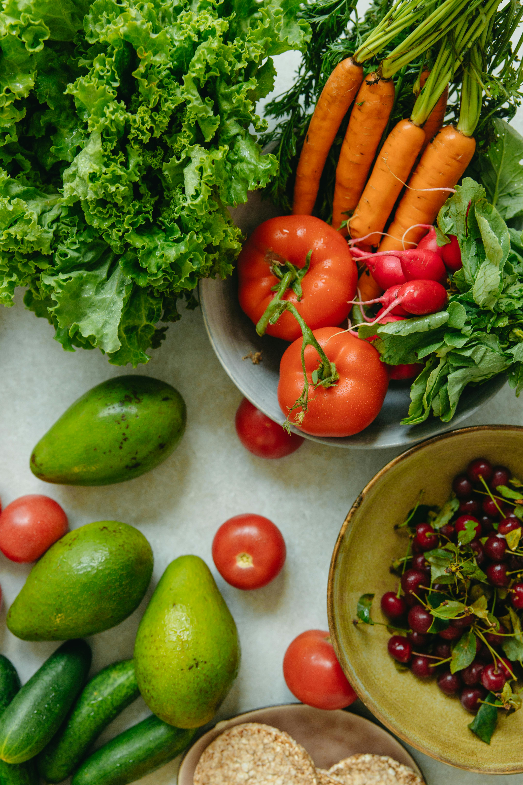

Aliments Naturels Essentiels
Guide complet des meilleurs aliments naturels pour vos volailles
Céréales - Base Énergétique

Blé
13% protéines
3200 kcal/kg
60% de la ration
Avantages : Excellente source d'énergie, riche en amidon, bonne digestibilité
Utilisation :
- Base de l'alimentation (50-60%)
- Peut être concassé ou entier
- Mélanger avec d'autres céréales

Maïs
9% protéines
3600 kcal/kg
40% de la ration
Avantages : Très énergétique, améliore la couleur du jaune d'œuf, appétent
Utilisation :
- Complément énergétique (30-40%)
- Concassé pour jeunes volailles
- Entier pour adultes
Orge
11% protéines
2900 kcal/kg
20% de la ration
Avantages : Riche en fibres, favorise la digestion, économique
Utilisation :
- Complément céréalier (15-20%)
- Concassée ou aplatie
- Bonne pour la digestion
Sources de Protéines

Légumineuses
20-25% protéines
Naturelles
10-15% de la ration
Types : Pois, lentilles, haricots, féveroles
Préparation :
- Trempage 12-24h avant distribution
- Cuisson légère pour améliorer digestibilité
- Mélange avec céréales

Graines de Tournesol
16% protéines
45% lipides
5-10% de la ration
Avantages : Riche en vitamine E, améliore le plumage, très appétentes
Utilisation :
- Complément protéique et énergétique
- Décortiquées ou entières
- Excellentes pour la mue

Protéines Animales Naturelles
50-70% protéines
Naturelles
2-5% de la ration
Sources : Vers de terre, insectes, escargots, larves
Avantages :
- Protéines complètes et digestibles
- Comportement naturel de picage
- Riche en acides aminés essentiels
Verdures et Légumes

Herbes Fraîches
Vitamines A, C, K
Antioxydants
10-20% de la ration
Types : Trèfle, luzerne, pissenlit, ortie, plantain
Bénéfices :
- Vitamines et minéraux naturels
- Stimulation de l'appétit
- Amélioration de la digestion

Légumes Racines
Bêta-carotène
Énergie
5-10% de la ration
Types : Carottes, betteraves, navets, topinambours
Préparation :
- Râpés ou coupés en morceaux
- Crus ou légèrement cuits
- Mélangés à la ration principale

Légumes Verts
Chlorophylle
Antioxydants
10-15% de la ration
Types : Épinards, choux, salades, blettes
Avantages :
- Riches en vitamines et minéraux
- Amélioration de la couleur du jaune
- Effet détoxifiant naturel